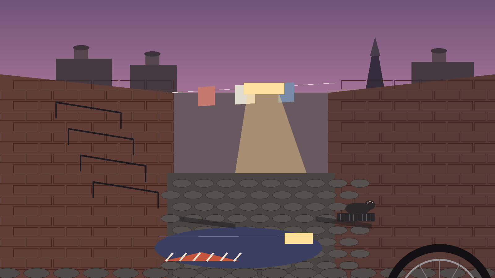

➤➤
BigHero6
Take the slip: BigHero6.capeDROP 01

SHIFT 17:42
Mac-Cursors is a collection of cape files for Mousecape, the Mac cursor editor, gathered as ready to import designs that restyle the pointer across the system. Each design ships as a cape file; a visitor picks a look, imports the cape into Mousecape, and applies it.
Every design in the repository, pinned as a delivery job. The slip on each card leads to that cape file in the repository.
Reverting is done inside Mousecape by reapplying the stock design. A cape changes appearance only, never pointer behaviour, tracking speed, or click settings.
High contrast pointers for bright rooms and projectors. Larger designs for large displays. Quiet designs for screen recording. Check the wait state before committing, since it is the one state a user stares at longest.